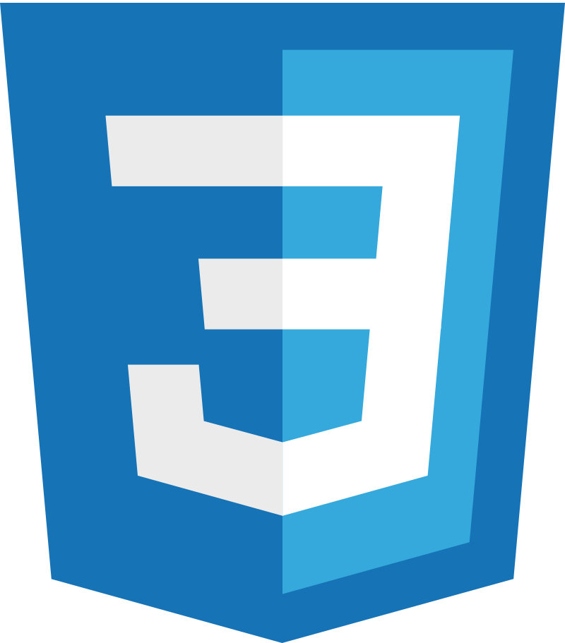
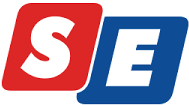
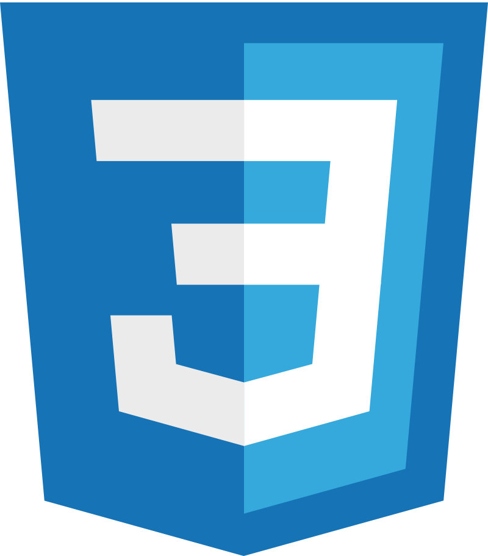
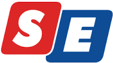

HABILIDADES E COMPETÊNCIAS
Compliance,
Auditoria interna,
Auditoria externa,
Controle interno,
Gestão de riscos corporativos,
Gestão de Seguros,
Gestão estratégica,
Gestão de projetos,
Estratégias empresariais,
Planejamento estratégico,
Técnicas investigativas,
Scrum,
Kanban,
PDCA,
OKRs,
Metodologias ágeis,
COSO,
ISO 19.600,
ISO 27.001,
ISO 31.000,
ISO 37.001,
ISO 37.301,
LGPD (Lei Geral de Proteção de Dados Pessoais (LGPD),
CRC,
Software ERP,
Microsoft Excel avançado,
Microsoft PowerPoint avançado,
Auditoria de TI,
Governança de TI,
Framework NIST,
Gestão de segurança da informação,
Product owner,
Team management,
Comunicativo,
Alta capacidade analítica,
Gestão de equipe,
Capacidade em argumentar e negociar,
Capacidade de organização,
Ético,
Proativo,
Determinado,
Resiliente e com alta capacidade de adaptação,
Autonomia para solução de problemas complexos,
Inglês fluente,
Reporte assertivo.
FORMAÇÃO ACADÊMICA
Bacharelado em Engenharia de Software
UNIVILLE
Entusiasmado com os novos desafios. Vislumbrando oportunidades para melhorar meu desempenho e carreira aplicando tecnologia. É um sonho antigo tornando-se realidade. Aprimorar o sistema de governança corporativa com Data Science & Artificial Intelligence.
Pós Graduação de Compliance, Riscos e Auditoria
CATOLICA SC
Pós Graduação em Auditoria com ênfase no combate a fraudes financeiras
UNISOCIESC
Bacharelado em Ciências Contábeis
UNISOCIESC
CURSOS, LICENÇAS E CERTIFICADOS
Administração e Compliance de sistemas de Segurança da Informação
IBM
Lead Implementer e Auditor Interno de sistemas integrados de Compliance e Anti-suborno - Baseado na ISO 37.301 e 37.001, com padrões internacionalmente reconhecidos.
ABNT
Registro profissional de Contador
CRC SC
Liderança e comunicação assertiva para o ambiente corporativo
FGV
IFRS - Normas Internacionais de Reportes Financeiros
FIPECAFI
Padrões Internacionais de Auditoria
The IIA
Matemática financeira
FIPECAFI
 



SOBRE
Bacharel em Ciências Contábeis, com registro profissional de contador, e curso de especialização com ênfase em Compliance. Especialista em Gestão de Riscos e Compliance, capacitado como Lead Implementador e Auditor Interno do Sistema Integrado de Gestão de Compliance e antissuborno, pela ABNT com base nas normas ISO 37.001 e 37.301, reconhecidas internacionalmente, incluindo também um forte domínio das ISO's 31.000, 27.001 e leis de privacidade de dados.
Profissional com mais de 9 anos de experiência em Auditoria, Gestão de Riscos e Compliance, encarregado de construir o Programa de Risco, Compliance e Auditoria Interna para prevenir, detectar e remediar condutas que não estejam de acordo com os valores da empresa e a legislação brasileira, além de disseminar, não apenas a cultura corporativa e o conhecimento sobre a Governança em todos os níveis da organização, mas também o pensamento baseado em risco, com o objetivo de capacitar os colaboradores para enfrentar os dilemas éticos na tomada de decisão e no exercício de suas atividades.
Particularmente, é intenso e estimulante preparar este programa para proteger e criar valor, escrever todo esse material teórico para convertê-lo em ações e soluções práticas, para então estabelecer os processos e atividades e divulgá-los a todos os interessados.
A oportunidade de trabalhar em pesquisas para implementar os melhores modelos é o grande diferencial desta fase da minha carreira, proporcionado pela Krona. Ser um cientista, seguir este simples conjunto de regras de questionar tudo, pesquisar, testar ideias através de experimentos e observação, desenvolver ideias aprovadas seguindo as evidências onde quer que nos leve, registrando o conhecimento adquirido em materiais de consultoria e divulgando-o para qualquer público interessado em ouvir. É um desejo realizado e estou muito feliz e orgulhoso do meu caminho, até agora. E as próximas fases já estão meticulosamente planejadas.
EXPERIÊNCIA PROFISSIONAL
KRONA | 2022 - ATUAL
Especialista em Governança Corporativa, Compliance e Riscos
Principais atribuições:
- Responsável pela estruturação e acompanhamento da rotina do conjunto de instrumentos necessários para adotar as boas práticas de Governança Corporativa, envolvendo Compliance, Gestão de Riscos, Controles Internos, Auditoria Interna e Gestão de Seguros;
- Responsável por criar e estimular uma cultura que encoraje a conduta ética e de aderência ao Compliance; de identificação dos riscos do mercado e os riscos específicos relacionados aos negócios da empresa; de prevenção e detecção de condutas ilícitas existentes ou potenciais;
- Responsável por preparar e apresentar os materiais que abordam os temas de Compliance, Gestão de Riscos, Controles Internos e Auditoria Interna ao Conselho de administração Krona, bem como de obter seu apoio para o desenvolvimento de todo o programa;
- Responsável pelo desenvolvimento de indicadores para acompanhar e demonstrar o desempenho das áreas de negócios em projetos relacionados com o Compliance, Gestão de Riscos, Controle Interno e Auditoria Interna;
- Responsável por assegurar o cumprimento das atividades Compliance, Gestão de Riscos, Auditoria Interna e Controles Internos, considerando as diretrizes estratégicas da organização;
- Suportar as áreas de negócios e apoiar a construção de mecanismos de controle visando o cumprimento da legislação, do Código de Ética e Conduta e das Políticas Internas através de consultoria e da criação de regras claras, divulgadas e acessíveis, e de ferramentas fáceis de manejar;
- Responsável por elaborar o plano anual de comunicação e treinamento de boas práticas em relação à Governança Corporativa e o Compliance e por disseminar por meio de material de comunicação, treinamentos, artigos, palestras e workshops a cultura Ética e o “Pensamento baseado em riscos”;
- Mapear, avaliar, reportar e monitorar os Riscos de maior exposição para a Companhia;
- Responsável pelo desenvolvimento do Estatuto de Auditoria Interna e o Plano Anual de Auditoria Interna;
Analista de Controles Internos
Principais atribuições:
- Desenvolver manuais de normas e procedimentos, fluxogramas dos processos e políticas internas das áreas sob responsabilidade;
- Responsável por desenvolver o mapa de riscos corporativos e obter a definição de ação de mitigação, eliminação, monitoramento, compartilhamento ou aceitação para cada risco alto e crítico mapeado;
- Responsável por desenvolver o Catálogo de Controles Internos com base em riscos;
- Participação ativa no levantamento de processos, na elaboração dos documentos, e construção dos mecanismos de controle para aderência a Lei Geral de Proteção de Dados (LGPD);
- Desenvolver pesquisas e materiais importantes para orientar a tomada de decisão da Alta Administração.
Referências:
Todas as atividades listadas foram implementadas e desempenhadas com base em metodologia própria, mas devidamente alinhada com práticas de mercado disseminados pelos órgãos como o Instituto de Auditores Internos - IIA, Instituto Brasileiro de Governança Corporativa - IBGC , Committee of Sponsoring Organizations of the Treadway Commission - COSO ERM, Associação Brasileira de Normas Técnicas - ABNT, as ISO 27.001 - Gerenciamento de Segurança da Informação, 31.000 - Gerenciamento de riscos, 37.001 - Sistema de Gestão Antissuborno e 37.301 - Sistema de Gestão de Compliance, e as leis Sarbanes Oxley para estruturação dos requisitos mínimos de controle interno, a Lei 13.709/2018 LGPD - Lei Geral de Proteção de Dados, a Lei 12.846/2013 - Lei anticorrupção, o artigo 41° do decreto n° 8.420/2015, que regula a lei 12.846 e atualizada pela medida provisória n° 703/2015 que define o programa de integridade.
MOORE STEPHENS | 2012 - 2019
Auditor Externo
Principais atribuições:
- Responsável por atuar em projetos de auditoria interna, controles internos e gestão de riscos. Ajudando os clientes a otimizar seus processos através de revisões/auditorias, mapeamento e melhoria de processos e mitigação de riscos, atuando desde o mapeamento dos processos, emissão de fluxogramas, análise de riscos, identificação de controles internos, realização de testes de desenho e efetividade, identificação de oportunidades de melhoria e emissão de relatórios contendo recomendações baseadas nas melhores práticas de mercado.
- Identificar oportunidades de desenvolvimento dos negócios, construindo relações e demonstrando conhecimento das atividades do cliente e comunicando-se diretamente com a empresa-alvo.